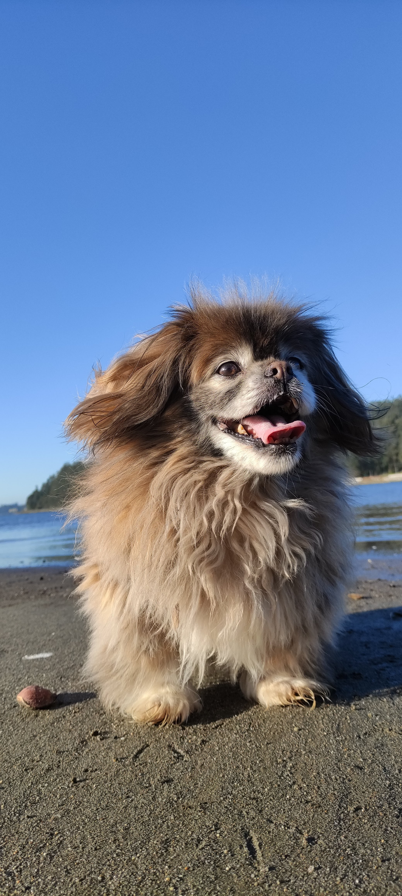

Pekinés, el perro-león
Esta pequeña raza es una derivación de los míticos perros lanudos del Tíbet. Derivación tras derivación, se conocen las primeras documentaciones oficiales en grabados coreanos de hace 4000 años, y otros del siglo viii d. C. inmersos ya en la corte imperial china, en plena dinastía Tang.
Para los habitantes del Celeste imperio, este animal surgía en una época mitológica, y aquí hay un pequeño párrafo sobre este origen:
Perdidamente enamorado de una pequeña mona, el rey león pidió permiso al dios Mago Hai Ho para desposarla. -Si estás dispuesto a sacrificar tu fuerza y tu tamaño, te doy mi consentimiento, fue la respuesta del dios.
Así, según la leyenda china, nació el pequinés. Valiente y orgulloso como su padre y pequeño, amoroso e inteligente como su madre.
Apreciado por el budismo, el perro-león fue convertido en la Antigua China en un símbolo mismo de esta religión. Capricho y pasión de la familia imperial, vivió durante siglos en la Ciudad Prohibida en Pekín (de ahí el patronímico de la raza), sin ningún contacto con el mundo exterior.
En esa época, el valor de joya de la familia imperial de esta raza de perritos, invocaba leyes especiales en las cuales una falta de protocolo frente a ellos se castigaba con cárcel; el robo, el secuestro o el asesinato de un pekinés se pagaba directamente con la vida del infractor.[cita requerida]
Durante mucho tiempo fueron un privilegio solo para la familia imperial y la alta nobleza china, estando prohibida su exportación. Los primeros ejemplares llegaron a Europa en el año 1860, llevados ante la reina Victoria de Inglaterra, tras las incursiones del Ejército Británico en Pekín durante la Segunda Guerra del Opio, donde el aspecto exótico de estos animales durante el saqueo del Antiguo Palacio de Verano los llevó a incluirlos en el botín, y treinta años más tarde se presentaron por primera vez en la exposición de Chester.
| Apariencia |
Personalidad |
Cuidados |
| Ojos grandes |
Fieles |
Cepillar pelo constantemente |
| Nariz pequeña |
Tercos |
Cuidar sus ojitos |
| Patitas cortas |
Valientes |
No dejar solos por mucho tiempo |
| Cola enroscada |
Estoicos |
Suelen tener problemas cardiacos |
| Pelaje largo |
Afectuosos |
Debido a su nariz pequeña, sufren disnea |
Para saber más sobre los cuidados básicos haz click aquí
Raza en la actualidad
En el pasado, la emperatriz Tseu´Hi estableció reglamentos específicos para su cría: prohibía el uso de cualquier tipo de artificio para producir pekineses minúsculos, a fin de preservar la salud del perro y a ella debemos el pekinés que hoy conocemos. Sin embargo, muchas personas en la actualidad buscan promover cruzas entre estos animales que ponen en riesgo su salud, como la cría de perros diminutos, cruza entre perros del mismo árbol familiar (lo que conlleva a mutaciones), cría indiscriminada, hasta robo y tráfico de estos animales. Por esa razón te pedimos que tengas en consideración:
- Pekineses puros hay muy pocos y el precio es elevado, el comprar estos animalitos "sangre pura" sigue promoviendo su distribución como un objeto escazo en lugar de seres vivos.
- Lo ideal sería que adoptes, pero ya sea que adoptes o compres, comprueba la salud del animal con un control veterinario.
- En este blog amamos a los pekineses y eso incluye a los híbridos, olvida el concepto de perros de raza y dales una oportunidad.


El pekinés es para ti si...
- No tienes mucho espacio
- Te gusta la tranquilidad
- Quieres entregarle tu amor a un amigo peludo